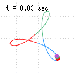
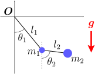
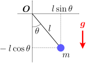
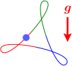
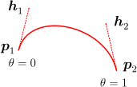
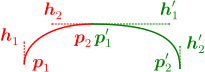

9.自由な座標

この章のシミュレーション（クリックで計算開始）：
自由な座標
適当に曲げた針金を用意し、そこに物体を通した時（右図）、その物体の運動

このような場合、右図のように、曲線上にパラメータ
自由な座標
そこでこの章では、「運動方程式(自 由 な 座 標 で の 運 動 方 程 式 物 体 の 運 動 の 計 算
9.1自由な座標
運動方程式(

針金の場合、自由な座標
さて、前章で述べたように、拘束条件
一般的に考えたいので、拘束が時間とともに変化する場合を含めることにする。その場合、座標
拘束条件(
式(
【9.1-注1】自由な座標
座標
なんだか恐ろしい式だが、拘束条件が時間に依存しない場合、赤字部分は
導出
9.2物体の運動
以上で、必要な議論がそろった。この節では、まず、自由な座標を用いた場合の運動の計算方法についてまとめる。その後、振り子と二重振り子の場合について、自由な座標
物体の運動
物体の位置
【例題】極座標での振り子の運動方程式：式(

2次元平面上の2次元振り子を考える。自由な座標
なお、3次元の場合の運動方程式を考えると、方位角を
【例題】極座標での二重振り子の運動方程式：式(
【例題】ベジェ曲線上のおもりの運動方程式

任意の形状の曲線を拘束条件とする場合（例えば右図）、ベジェ曲線を用いることができる（以下の【9.2-注1】）。外力として重力がかかっているとする。運動方程式を求めるには、
式
数値計算を行うと、右図のようになる。グリッドの間隔は
【9.2-注1】3次のベジェ曲線

ベジェ曲線は、右図のように、2つの任意の点
補足

複雑な曲線を補間する際には、曲線を分割し、各区間をベジェ曲線で補間するという方法がとられる。右図のように、2つのベジェ曲線が点